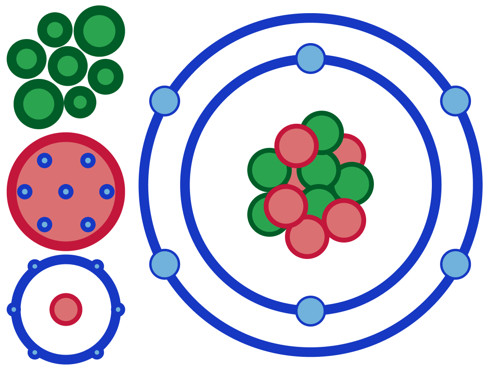

The atom is the miniscule building block of all things. Everything you can see is made up of them. A desk in your classroom, the pen you use to write notes, the computer in front of you that you are using to look at this very website, even you yourself. All of this to say that they are a very important part of science. But how were they discovered? If something is so small that you cannot even see it yourself, how did scientists figure out they were there?
It began with theories as early as roughly 400BCE, where atoms were thought to be of the four elements (earth, water, air, and fire), small solid spheres of different sizes that made things up. Over the centuries, this theory was altered by many, changing into what we know today as the atomic model, a small nucleus of positive and neutral charges, surrounded by negative charges.
Assessment 91172 is the NCEA assessment dedicated to the understanding of atomic and nuclear physics. That includes not only the current model of the atom, but also some of the previous atomic models, ionisation, what an isotope is, and the different types of radiation, including their properties. A few of these topics may be unfamiliar to you, and that is why this website is dedicated to helping you navigate the subject, understand its content, and achieve the standard.

This page will cover the three most relevant previous models of the atom, and what discoveries led to them. It will also cover Rutherford's scattering experiment, and its three observations.
This page will cover the current atomic model, as well as the parts that make it up. It will also cover the atomic mass and atomic number.
This page will cover the topics of ionisation, isotopes, and the different kinds of radiation and their properties.